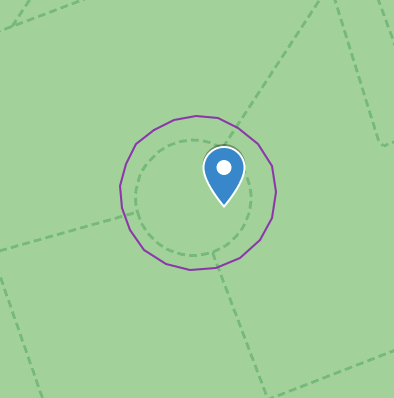

With this website you'll be able to identify which gyms should have the EX raid gym tag and which gyms don't have the tag due to being inside an exclusion area.
If one of the gyms is classified as an EX gym but does not have the tag in the game is might be due to:
The website has some modes being the 2 most important Manual and Automatic. You need to include a list with all the gyms you want to check no matter which mode is used.
The file (.txt or .csv) with all the gyms has to be in the format Name,Latitude,Longitude. Here is an example of the content of a valid txt file:
In some cases a difference of a few meters matter so it's very important to use the exact coordinates of the gyms so here are some ways to obtain them.
Intel Ingress Map (requires an Ingress account)
Pokémon GO
Google Maps
Apple Maps
This mode uses the Overpass API to get EX and exclusions area in the area covered by the gyms. The Overpass API is a little restrictive so the website has some limitations to avoid errors with the API. As this mode uses the Overpass API, it's much slower than manual mode (although obtaining both GeoJSON also takes some time).
Once you have included a file with all the gyms, do the following steps:
In this mode GeoJSON files of EX and exclusion areas have to be included.
In order to obtain these files, you have to use overpass-turbo with some given queries. Click on the links below, center the map in the area you want to include, run the query and export the results as a GeoJSON file.
EX areas: https://overpass-turbo.eu/s/NYF
Exclusion areas: https://overpass-turbo.eu/s/Nnp
Once you have the files, upload then and click the button Get EX and blocked gyms.
It's similar to manual mode but files for EX and exclusion areas are given as URLs. This mode is useful if you upload the GeoJSON files to an external server.
After you've clicked the button Get EX and blocked gyms, a button will appear to download a csv including all the EX gyms and those that are in an exclusion area. You'll also be given a summary of the results.
Example of an output csv file:
If you get at least one blocked gym (EX gym inside an exclusion area), a button called Get kml file with blocked gyms will appear. If you click it, a kml file will be automatically downloaded. This file can be uploaded to Google My Maps to see the exclusion areas that block the gyms to be EX.
Example:
